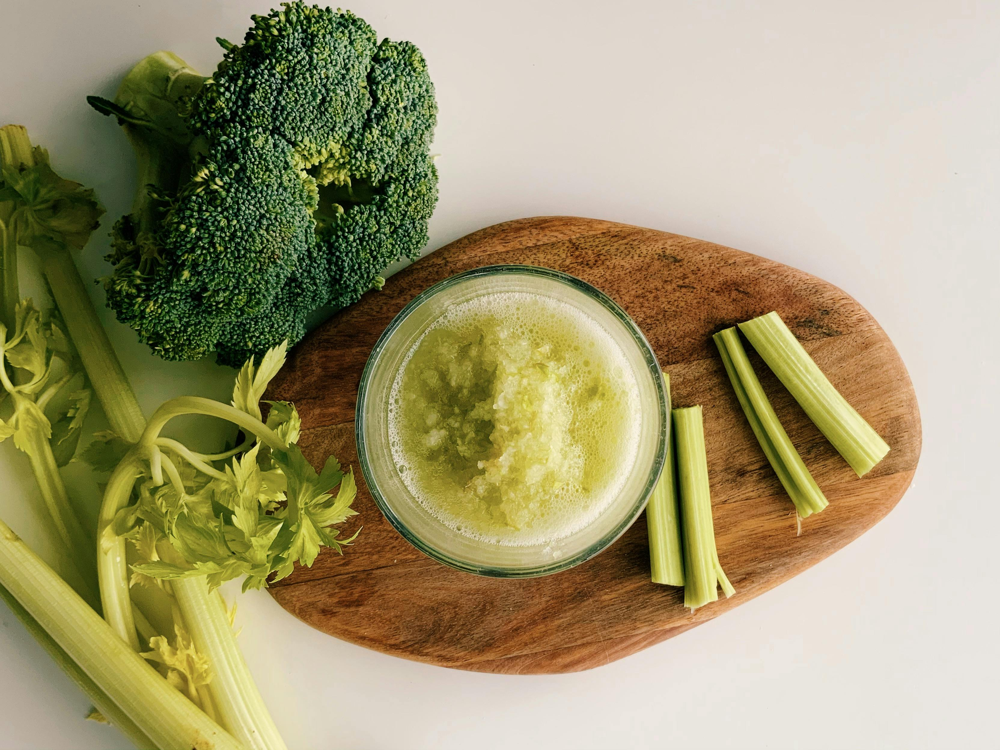
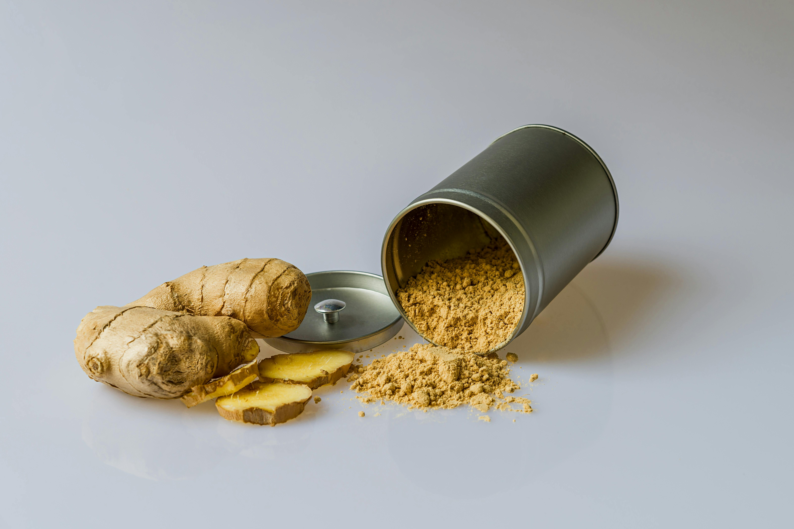
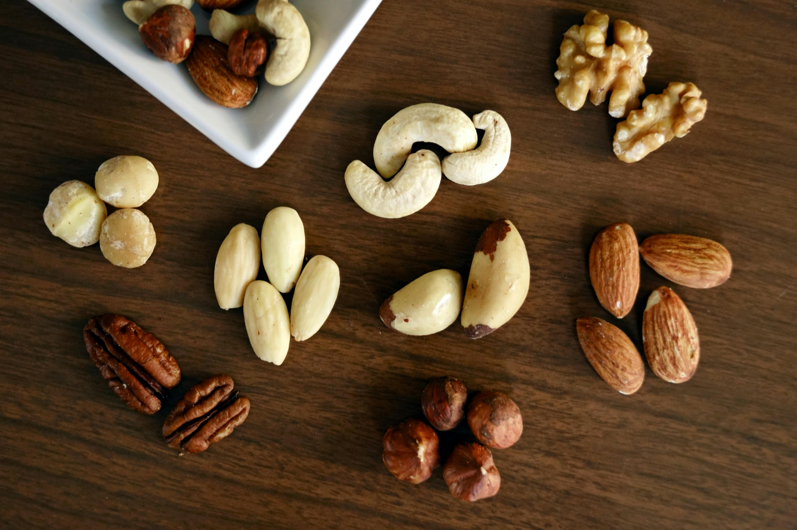

Garlic (Allium sativum)
Garlic's primary bioactive compound, Allicin (formed when raw garlic is crushed), exhibits strong antimicrobial, antifungal, and antiviral properties. In cardiovascular health, it significantly improves vascular elasticity and reduces the synthesis of cholesterol by inhibiting the HMG-CoA reductase enzyme.
Turmeric Root
Contains Curcumin, a powerful polyphenol. Curcumin fights systemic inflammation at the molecular level by blocking NF‑kB, a protein molecule that travels into the nuclei of cells and turns on genes related to inflammation. It is highly effective in managing arthritis symptoms and reducing post‑exercise muscle soreness.

Leafy Spinach
Loaded with non‑heme iron for hemoglobin production and bone‑strengthening calcium. It is rich in glycolipids, which help prevent cancer cell proliferation. Its high antioxidant content (lutein and zeaxanthin) is critical for protecting the eyes from oxidative stress, maintaining bone mineral density, and promoting healthy red blood cell counts.
Fatty Fish (Salmon)
A premier source of Omega‑3 fatty acids (EPA and DHA). These are essential for neuro‑protection and brain function. Clinically, they reduce the risk of arrhythmias, lower triglycerides, and slow the growth of atherosclerotic plaques, making salmon a critical food for managing cardiac health and preventing cognitive decline.

Blueberries
Loaded with high concentrations of anthocyanins, which give them their color. These antioxidants have neuroprotective effects, directly improving the communication between brain cells and slowing down age‑related memory decline. Clinically, they help reduce the risk of DNA damage, which is a key driver of various types of cancer.

Broccoli
A potent source of Sulforaphane, a sulfur‑rich compound that is activated when broccoli is chewed. It helps neutralize carcinogens and reduce inflammation by inhibiting the production of enzymes that damage joints. It supports immune function and contains fibers that promote a healthy gut microbiome, crucial for efficient digestive processes.

Ginger Root
The primary bioactive compound, Gingerol, is responsible for much of its medicinal properties. Gingerol has powerful anti‑inflammatory and antioxidant effects. Clinically, it speeds up stomach emptying, which is highly beneficial for patients with indigestion and promotes the restoration of the stomach lining in cases of gastritis.

Walnuts
Walnuts have a significantly higher antioxidant content than any other common nut. They provide healthy fats, including alpha‑linolenic acid (ALA), an Omega‑3. Polyphenols found in walnuts help lower LDL (bad) cholesterol levels. Clinically, regular consumption can reduce oxidative stress and inflammation, supporting overall brain health and preventing vascular disorders.

Whole Oats
Whole oats contain a specific type of soluble fiber called Beta‑Glucan. When digested, Beta‑Glucan forms a thick gel in the gut, which helps reduce levels of bad cholesterol and stabilizes blood sugar. Clinically, they improve insulin response and promote satiety, making them crucial for managing diabetes and aiding in obesity reduction.

Greek Yogurt
A primary probiotic food, Greek Yogurt contains live cultures (friendly bacteria) that help restore the natural balance of gut flora. It is rich in protein and calcium. Clinically, it is used to manage various digestive disorders, reduce symptoms of irritable bowel syndrome (IBS), and enhance immune function by maintaining gut microbiome stability.

Avocado
Avocados are unique because they are high in healthy monounsaturated fats, specifically oleic acid, which reduces inflammation throughout the body and supports cellular membrane health. Clinically, their fats help the body absorb nutrients from other vegetables and support vascular health, reducing the risk of heart disease.

Green Tea
Green Tea is loaded with polyphenols, including catechins (most importantly EGCG). Catechins have powerful antioxidant properties that protect cells from damage. Clinically, they help increase metabolism, improve blood flow, and lower cholesterol, which is beneficial for managing hypotension and supporting overall cardiovascular efficiency.

Almonds
Almonds are an exceptional source of Vitamin E, a potent antioxidant that protects cell membranes from oxidative damage. Clinically, regular consumption can help manage healthy blood sugar levels, reduce cholesterol, and lower blood pressure. Their high Vitamin E content is critical for eye health and has neuroprotective properties.
Sweet Potatoes
Sweet Potatoes get their color from Beta‑Carotene, an antioxidant that is converted into Vitamin A in the body. Vitamin A is critical for vision, bone health, and maintaining the immune system. Clinically, they provide a steady release of energy and help maintain healthy mucosal linings, protecting the body from infections.

Flaxseeds
Flaxseeds are exceptional sources of both soluble and insoluble fiber, which promotes regular bowel movements and gut stability. They are premier sources of Lignans, phytoestrogens that have antioxidant properties and support hormonal balance. Clinically, they are used to manage hormonal disorders and chronic digestive issues.
Integrating Functional Foods into Clinical Practice
Bioavailability Considerations
Pairing fat‑soluble compounds (curcumin, lycopene) with healthy fats enhances absorption. Black pepper increases curcumin absorption by 2000%.
Whole Food Synergy
Isolated supplements often lack the co‑factors found in whole foods. For example, an apple with its peel provides quercetin plus fiber for better blood sugar control.
Dosing and Frequency
Most clinical benefits require regular, long‑term consumption. Aim for at least 3–5 servings of these foods per week to achieve therapeutic effects.
Interaction with Medications
Some foods (grapefruit, garlic, turmeric) can alter drug metabolism. Always review potential interactions with a clinical pharmacist.
Recent Advances in Nutritional Science
Polyphenols and the Gut Microbiome
New research shows that polyphenols from berries and tea are metabolized by gut bacteria into active compounds that reduce systemic inflammation.
Personalized Nutrition
Genetic variations (e.g., MTHFR, FTO) influence how individuals respond to dietary components. Tailored advice is becoming feasible with advanced testing.
Food as Medicine Programs
Hospitals are now integrating "produce prescriptions" into diabetes and hypertension management, with measurable reductions in HbA1c and blood pressure.
Clinical reminder: The information provided is based on peer‑reviewed studies. Therapeutic diets should be supervised by a qualified healthcare professional, especially in patients with chronic diseases or those taking multiple medications.